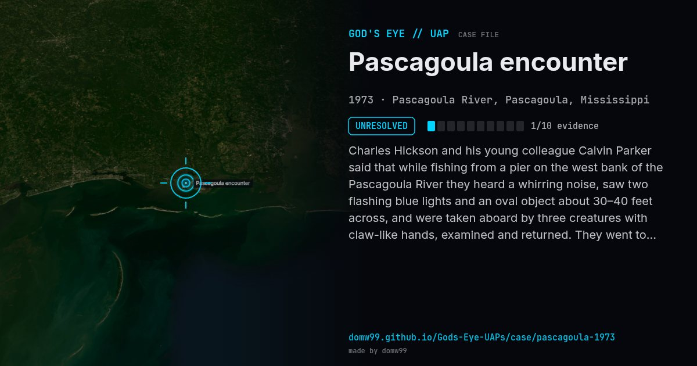

Pascagoula encounter

Charles Hickson and his young colleague Calvin Parker said that while fishing from a pier on the west bank of the Pascagoula River they heard a whirring noise, saw two flashing blue lights and an oval object about 30–40 feet across, and were taken aboard by three creatures with claw-like hands, examined and returned. They went to the Jackson County sheriff’s office around 11 p.m. Officers who suspected a prank left the two alone in a room with a hidden recorder; the men’s talk matched their story. The case set off a wave of 1973 reports along the Gulf Coast and made Hickson a long-time public speaker; Parker published his own account in 2018.
Explanation
No physical evidence was found beyond the two men’s testimony. Sceptics see a hoax or a hallucination; the witnesses stuck to their story, including when they were secretly recorded at the sheriff’s office.
What was seen
Shape: Oval object with flashing blue lights
Witnesses: Charles Hickson (45) and Calvin Parker (17)
Duration: Not recorded
Sources
Browse
- United States
- 1970s
- Unresolved
- Close encounters
- Many independent witnesses
- Audio recordings or radio transcripts
- Lights and fireballs
- Spheres and orbs